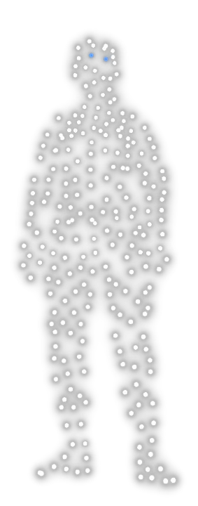

Live show director & producer
Drone shows, stadium spectacles, brand experiences.

Creative Director at Verge Aero since 2024. I direct and produce live spectacles — drone shows, stadium moments, and city-scale celebrations. I sit between the client and the production team: I take the brief, shape what the audience actually sees, and carry it through design, review, permitting, and live flight.
Campaign ideas and character work for brands, and the storyboards that turn a brief into a show — the insight first, the execution second.
Pipelines and tooling built to make production faster — real-time AI visuals, procedural shaders, and generative concepting.
I direct and produce live spectacles — drone shows, stadium moments, and brand experiences — from the first client conversation through design, permitting, and live flight.
At Verge Aero I've show-directed for Macy's 4th of July in NYC, Brisbane's official New Year's Eve countdown, the City of Baltimore and the Baltimore Ravens, and Wacken Open Air in Germany, sitting between the client and the production team and turning briefs into shows that actually fly on a broadcast clock.
Beyond the headline shows, I've designed for the NFL, minor-league baseball and college athletics, city anniversaries and Fourth of July celebrations, and music festivals across the US and Europe — dozens of shows a season.
I concept brand work (Under Armour, Nike), help teach drone show design at UT Austin, handle sales and business development for ADHOC Creative House, and build creative pipelines — 3D, real-time, and AI tooling — that make production faster.
Born in LA, shaped by Chicago, based in Austin. Off-screen: goalie for the Texas Longhorns hockey team.